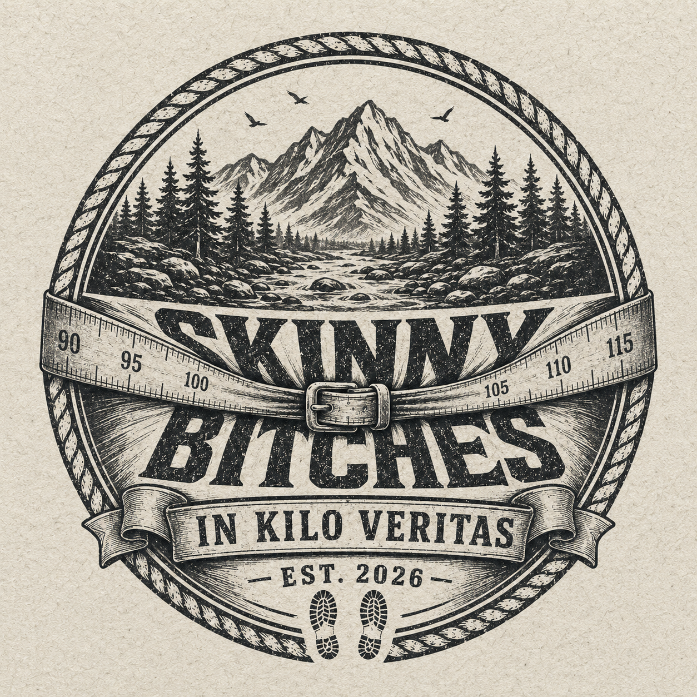
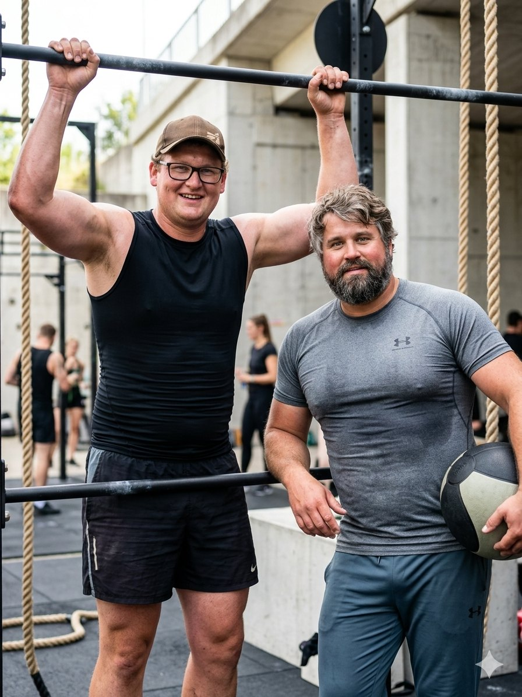

Zwei Pfunzeln haben beschlossen, schlanker zu sterben. Zwei andere sorgen dafür, dass es weh tut – und lustig wird.
Wer hier schwitzt →Stand: wird geladen …
Die Unbeugsamkeitserklärung
Es gibt Tage, da fasst ein Mann einen Entschluss, der grösser ist als er selbst. Bei Severin und Chrigu war so ein Tag. Zwei Schwergewichte mit einem BMI höher, als Matti Ruedi karierte Hemden im Schrank hat.
Der Plan ist simpel und huerä gnadenlos: runter mit dem Speck, rauf mit der Lebenserwartung. Die nächsten Cordon-bleu müssen verdient sein, nicht geschenkt.
Dafür haben sie sich den Teufel ins Haus geholt. Lars Klossner, lokal bekannt als Mr. Sexybless, zweitletzter Sohn eines Bergbauern, allseits begehrt und selten zu fassen. Er hat das Formhalten im steilen Gelände gelernt, lang bevor es dafür eine App gab. An seiner Seite: Bruder Mika Klossner, Mother²-Mikl, der vor allem deshalb mitläuft, um die verlorenen Kilos der zwei zu erben — und um neben der Trinkerei endlich ein zweites Hobby zu haben. Und schwerer zu werden als die Frauen, die er karisiert.
Jeden Montag schnüren sie die Schuhe an die Hufe. Das nennt sich Skinny Bitch Monday. Jeden Donnerstag wird gewogen, ohne Gnade, ohne Ausrede, ohne Tricks. Aus zwei Schwergewichten werden proppere Skinny Bitches.
In Kilo Veritas.
Die Zieldefinition
Zwei Bergpiraten, vor denen der Spiegel salutiert und die Hausfrauen von Boltigen vorsichtshalber die Vorhänge zuziehen. Genau da wollen wir hin.

Vier Steckbriefe, keine Ausreden
Zwei, die runter müssen. Zwei, die nachhelfen. Grösse lügt nicht, das Massband auch nicht. Frisch gewogen jeden Donnerstag.
Lade die Wahrheit …
Die Teststrecke
Die wöchentliche Leidensschlaufe. Hier wird am Skinny Bitch Monday gelaufen, geflucht und gelegentlich gebetet. Wer oben ankommt, hat den Tag gewonnen.
Die Wahrheit als Kurve
Jeder Donnerstag ein Punkt. Je länger die Linie, desto weniger Ausrede. Eine Kurve will nach oben (Mika erbt ja die Kilos), der Rest nach unten.
Das Leaderboard der Schande
Wer hat seit dem ersten Montag am meisten Speck im Tal liegen lassen? Oben steht der Held der Woche. Zuunterst, wer am Buffet gewonnen hat.